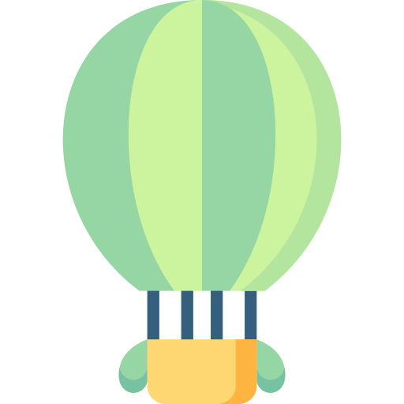
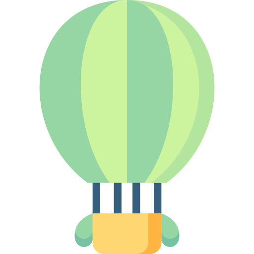

I'm Chloe.
a junior developer.


I am a recent Computer Science graduate with outstanding work ethic and an eagerness to learn. Since 2017, I have been working at an orthodontic office. I have gained many transferable skills that I intend to use in a tech-related job.
After years of working in a team environment, I have consistently shown dedication and initiative. I adapt according to the needs of the team and I enthusiastically help my teammates. In a team environment there is no space for a big ego. For me, the company's mission is always the priority.
When I started working at an orthodontic office, they had just started using 3D printing technology to fabricate dental models. There was a lot of trial and error during the early stages of implementation. However, I demonstrated an aptitude for problem solving by troubleshooting various technological issues. Now, the 3D editing/printing procedure is much more seamless.
I am capable of managing several different tasks due to my organization and time management. In order to deliver dental appliances on time, I had to ensure that all 3D models were printed on schedule. This task required planning and paying attention to scheduled appointments.